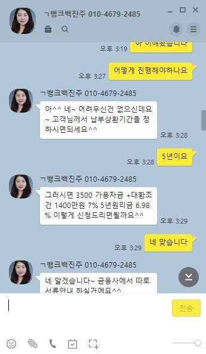
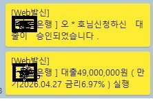

[직장인대출] 백진주 상담사님 감사합니다.
이름 : 직장인(개인회생)
재직기관 : 4년
사대보험 가입여부 : 가입
소득 : 연 4400
채무내역 : 신용회복 50회차
(우리은행 2400만원 / 하나은행 1400만원 /
기타 장기채권 1200만원 << 캐피탈에서 장기채권으로 이관)
필요서류 : 원천징수(19,20년),납부확인서,신분증,통장사본,
신용회복이며, 공공기록삭제로 개인적인 부동산(보증금 상향)문제로 대출이 시급하여
뱅크앤론에 문의드렸습니다.
신용회복채무에는 주로 1금융권 대출만 보여 혹시나 하는 마음에 대출 문의드렸습니다.
혹시나 하는 마음에 백진주상담사님께 현재 상황 공유 및 저금리로 시중1금융권으로 가능할까 해서
문의드렸으나, 운이 좋게 시중은행 및 하나은행(새희망홀씨)까지 저금리로 대환처리 되어
원하는데로 기분좋게 대출 받았습니다
백진주상담사님 및 뱅크앤론 임직원 분들 항상 건강에 유념하시고 번창하시기 바랍니다.

